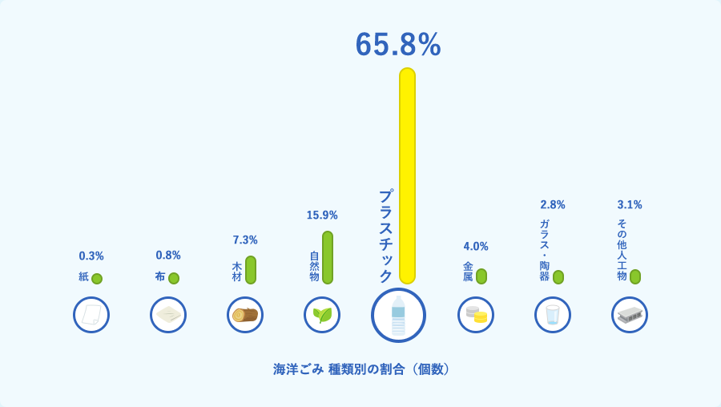
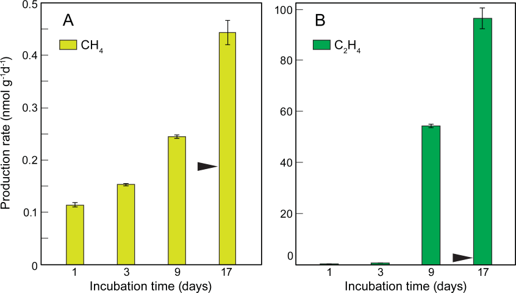

プラスチックごみ
海洋汚染の原因であるプラスチックごみ。世界全体においても家庭においても対策が行われ、
解決がいかに困難なことか生活していて実感しているのではないでしょうか。
現状
環境省は平成30年に調査した内容から、海洋ごみの 65.8％ はプラスチックであると発表しました。

またハワイ大学はプラスチックが太陽光にさらされると、メタンやエチレンなどの温室効果ガスを排出し、排出量は日が経つごとに増えていくとの研究結果を発表しています。

プラスチックゴミの対策
この問題を解決するにはやはり地道な手段である以下のことが必要であると考えます。
- プラスチック製品の使用を控える
- プラスチック製品の生産を減らす
- プラスチックの適切な処理
なんと日本ではプラスチック製品のレジ袋を有料化することで辞退率が７～８割になっています
レジ袋だけでなく他のプラスチック製品も同じような心掛けで使っていくことが大切なのです。